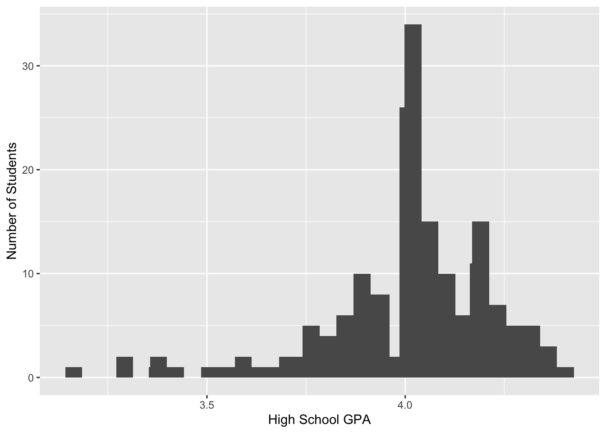

4 Project Workflow
For this lesson, we’ll understand how to develop an organized workflow.
4.0.1 Load Libraries
This is the first thing you want to do when authoring R-Markdown files. For this lesson, we’ll use ggplot2.
library(ggplot2)4.0.2 Creating Code Chunks
For mac: alt + command + i
For windows: control + alt + i
4.0.3 Creating Comments
use # to add comments within code chunks.
# I can write anything here about our object a.
a <- 2 + 2 # this is also allowed4.0.4 Commenting out multiple lines of code
For Mac and Windows: control + shift + c For Mac: command + shift + c
a <- 2 + 2
a <- 2 + 2
a <- 2 + 2
a <- 2 + 2
a <- 2 + 24.0.5 Importing Data
First, we want to check our working directory getwd()
getwd()## [1] "/Users/fernanr1/Documents/GitHub/r-4-er"4.0.6 using read.csv() to import data
# df1 = data frame 1
df1 <- read.csv("/Users/fernanr1/Documents/r-workshop/data/physics-course-data.csv")4.1 Inspecting Data
4.1.1 Types and Classes
6 atomic vector types (atomic means that an object holds data of a single type) - numeric - integer - string “a” “a word” - logical: TRUE or FALSE - complex 1+4i
4.1.2 using str() to examine data structure
str(df1)## 'data.frame': 158 obs. of 41 variables:
## $ roster_randomid : int 104500 104716 105751 106707 130996 133180 140533 141747 141925 143914 ...
## $ officialroster : chr "Yes" "Yes" "Yes" "Yes" ...
## $ ingradebookdata : chr "Yes" "Yes" "Yes" "Yes" ...
## $ insurveyparticipatedata : chr "Yes" "Yes" "Yes" "Yes" ...
## $ status : chr "Enrolled" "Enrolled" "Enrolled" "Enrolled" ...
## $ gender : chr "Male" "Male" "Female" "Female" ...
## $ eth2009rollupforreporting: chr "Hispanic" "Asian / Pacific Islander" "Asian / Pacific Islander" "Asian / Pacific Islander" ...
## $ agegroup : chr "19" "19" "19" "23" ...
## $ lowincomeflag : chr "Y" "N" "Y" "Y" ...
## $ fulltimestatus : chr "Full-time" "Part-time" "Part-time" "Part-time" ...
## $ firstgenerationflag : chr "N" "N" "Y" "Y" ...
## $ homeprimarylang : chr "English/non-English" "English only" "English/non-English" "English/non-English" ...
## $ admissionsstatusdetail : chr "Freshman" "Freshman" "Freshman" "Transfer" ...
## $ hsgpa : num 4 4.07 3.95 NA NA ...
## $ transfergpa : num NA NA NA 3.28 3.14 ...
## $ firstregacadyr : chr "2014-15" "2014-15" "2014-15" "2014-15" ...
## $ firstregacadterm : chr "Fall" "Fall" "Fall" "Fall" ...
## $ major1 : chr "Biological Sciences" "Pharmaceutical Sciences" "Biological Sciences" "Public Health Sciences" ...
## $ post_ts : chr "7/25/16 19:47" "7/22/16 23:31" "7/25/16 21:33" "7/22/16 18:18" ...
## $ post_study : int 3 8 17 10 15 7 10 8 15 18 ...
## $ post_er1 : int 2 2 2 3 3 3 2 2 1 3 ...
## $ post_er2 : int 4 3 3 3 3 3 4 2 5 5 ...
## $ post_er3 : int 2 3 2 3 3 3 2 1 3 1 ...
## $ post_er4 : int 4 3 3 3 3 3 4 4 3 4 ...
## $ post_activ1 : int 1 1 2 2 3 4 3 2 4 6 ...
## $ post_activ2 : int 2 0 0 4 2 0 0 0 0 0 ...
## $ post_activ3 : int 0 0 0 NA 2 0 0 0 0 0 ...
## $ post_activ4 : int 1 0 0 3 1 0 0 NA 1 0 ...
## $ post_activ5 : int 2 7 1 1 1 2 5 7 4 2 ...
## $ post_activ6 : int 0 0 0 1 1 0 0 0 0 0 ...
## $ post_activ7 : int 0 1 1 2 3 3 0 0 1 0 ...
## $ post_aca1 : int 2 1 1 2 1 2 1 1 2 2 ...
## $ post_aca2 : int 1 1 1 1 1 1 1 1 2 1 ...
## $ post_aca3 : int 1 2 1 1 1 1 3 1 1 1 ...
## $ post_aca4 : int 1 3 1 1 1 2 4 1 2 1 ...
## $ post_aca5 : int 1 1 1 NA 1 1 1 1 2 1 ...
## $ quizzes : num 90.4 82.2 92.9 0 85.8 ...
## $ homework : int 105 103 103 NA 93 104 104 99 99 94 ...
## $ finalexam : int 82 61 80 NA 64 87 98 90 84 45 ...
## $ grade_finalscore : num 89 77.9 88.8 33.3 79.3 ...
## $ grade_lettergrade : chr "A-" "B" "A-" "F" ...4.1.3 Factors
Factors are variables in R which take on a limited number of different values, variables that are often referred to as categorical variables in the statistics world.
str(df1$agegroup)## chr [1:158] "19" "19" "19" "23" "22" "20" "19" "20" "20" "19" "20" "21" ...4.1.4 use the View() function actually look at your data
Note that all functions, like View() are case sensitive. Typing view() wont’ work.
View(df1)4.1.5 Using summary() to examine data
summary(df1$hsgpa)## Min. 1st Qu. Median Mean 3rd Qu. Max. NA's
## 3.160 3.910 4.040 4.003 4.147 4.400 84.1.6 Using table() to examine raw counts
table(df1$hsgpa)##
## 3.1600001 3.29 3.3 3.3599999 3.3900001 3.4200001 3.52 3.55
## 1 1 1 1 1 1 1 1
## 3.5999999 3.6500001 3.6900001 3.7 3.71 3.76 3.77 3.78
## 2 1 1 1 1 1 2 2
## 3.79 3.8 3.8099999 3.8299999 3.8499999 3.8599999 3.8699999 3.8800001
## 1 2 1 1 3 2 1 1
## 3.9000001 3.9100001 3.9200001 3.95 3.96 3.99 4 4.04
## 4 4 1 7 1 1 25 9
## 4.0500002 4.0599999 4.0700002 4.0799999 4.0900002 4.0999999 4.1100001 4.1199999
## 4 2 4 5 7 1 1 1
## 4.1300001 4.1399999 4.1500001 4.1700001 4.1799998 4.1900001 4.1999998 4.21
## 3 1 2 3 8 1 2 1
## 4.2199998 4.25 4.2600002 4.27 4.29 4.3000002 4.3099999 4.3299999
## 4 3 2 2 1 3 1 1
## 4.3499999 4.3600001 4.4000001
## 1 2 14.2 Creating a Histogram
4.2.1 Using ggplot to creat a histogram of hsgpa
Format is similar to last week’s lesson, but here were are using geom_histogram() instead of geom_point()
ggplot(df1, aes(x = hsgpa)) +
geom_histogram() +
stat_bin(bins = 50) +
labs(x = "High School GPA", y = "Number of Students")## `stat_bin()` using `bins = 30`. Pick better value with `binwidth`.## Warning: Removed 8 rows containing non-finite values (stat_bin).
## Warning: Removed 8 rows containing non-finite values (stat_bin).